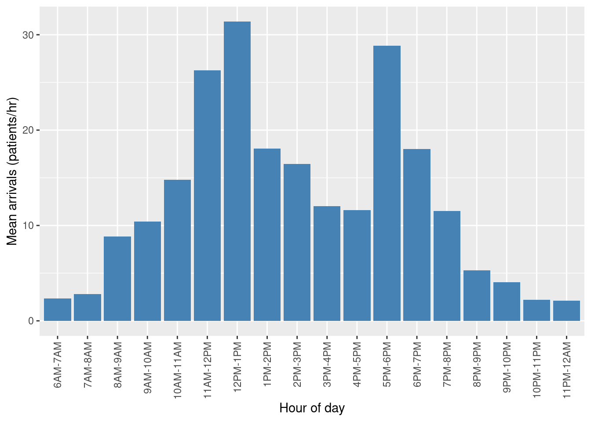
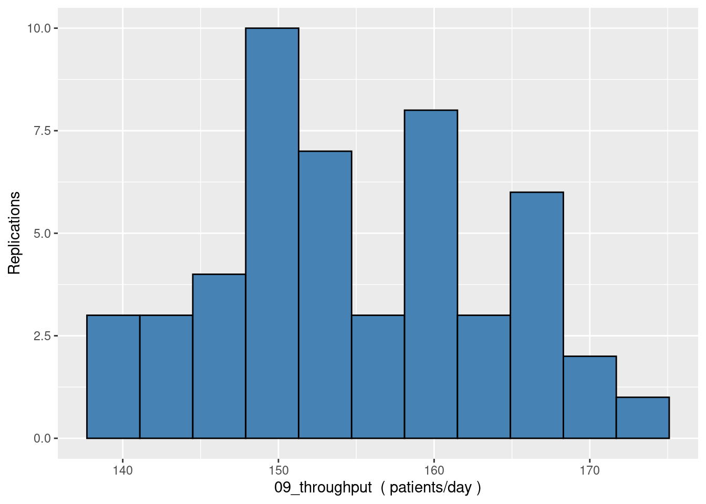

library(simmer)
library(simmer.bricks)
suppressMessages(library(simmer.plot))
library(tibble)
library(ggplot2)
suppressMessages(library(RCurl))
suppressMessages(library(Rlab))
suppressMessages(library(dplyr))
suppressMessages(library(tidyr))
options(dplyr.summarise.inform = FALSE)Model code
1. Imports
Note: we are calculating KPIs using our own code here, but you can also use
simmer.plot. Help with install ofsimmer.plot(igraphinstallation is the actual issue) on Linux based systems: https://r.igraph.org/articles/installation-troubleshooting#cannot-compile-igraph-from-sources-on-linuxIf you make use of conda environments (via Anaconda/mini-conda/mini-forge/mamba), remember to
conda deactivatebefore installation.
2. Default values and constants
2.1 Distribution parameters
#' Mean and Variance of the underlying Normal Distribution
#'
#' @description
#' `normal_moments_from_lognormal` calculates the mu and sigma
#' of the normal distribution underlying a lognormal
#' mean and standard
#'
#' @details
#' `rlnorm` from `stats` is designed to sample from the lognormal distribution.
#' The parameters is expects are moments of the underlying normal distribution
#' Using sample mean and standard deviation this function calculates
#' the mu and sigma of the normal distribution. source: https://blogs.sas.com/content/iml/2014/06/04/simulate-lognormal-data-with-specified-mean-and-variance.html
#'
#' @param mean A number. Sample mean.
#' @param stdev A number. Sample standard deviation
#' @returns A list
normal_moments_from_lognormal <- function(mean, std){
phi <- sqrt(std^2 + mean^2)
mu <- log(mean**2/phi)
sigma <- sqrt(log(phi^2/mean^2))
return(list("mu" = mu, "sigma" = sigma))
}# sign-in/triage parameters
DEFAULT_TRIAGE_MEAN <- 3.0
# registration parameters (lognormal distribution)
DEFAULT_REG_PARAMS <- normal_moments_from_lognormal(5.0, sqrt(2.0))
# examination parameters
DEFAULT_EXAM_PARAMS = list(mean=16.0, var=3.0)
# trauma/stabilisation
DEFAULT_TRAUMA_MEAN <- 90.0
# Trauma treatment (lognormal distribution)
DEFAULT_TRAUMA_TREATMENT_PARAMS <- normal_moments_from_lognormal(30.0, sqrt(4.0))
# Non trauma treatment (lognormal distribution)
DEFAULT_NON_TRAUMA_TREATMENT_PARAMS <- normal_moments_from_lognormal(13.3, sqrt(2.0))
# prob patient requires treatment given trauma
DEFAULT_NON_TRAUMA_TREAT_P <- 0.60
# proportion of patients triaged as trauma
DEFAULT_PROB_TRAUMA <- 0.122.2 Time dependent arrival rate data
The data for arrival rates varies between clinic opening at 6am and closure at 12am.
# data are held in the Github repo and loaded from there.
NSPP_PATH = 'https://raw.githubusercontent.com/TomMonks/open-science-for-sim/main/src/notebooks/01_foss_sim/data/ed_arrivals.csv'
csv_data <- getURL(NSPP_PATH)
df <- read.csv(text=csv_data)
# lock in order of time of day for bar chart display
df$period <- factor(df$period, levels = df$period)
ggplot(data=df, aes(x=period, y=arrival_rate)) +
geom_bar(stat="identity", fill="steelblue") +
theme(axis.text.x = element_text(angle = 90,
vjust = 0.5,
hjust=1)) +
xlab("Hour of day") +
ylab("Mean arrivals (patients/hr)")
2.3 Resource Counts
Integer count variables representing the number of resources at each activity in the process
DEFAULT_N_TRIAGE <- 1
DEFAULT_N_REG <- 1
DEFAULT_N_EXAM <- 3
# stabilisation rooms
DEFAULT_N_TRAUMA <- 1
# Non-trauma cubicles
DEFAULT_NON_TRAUMA_CUBICLES <- 1
# trauma pathway cubicles
DEFAULT_TRAUMA_CUBICLES <- 12.4 Simulation model run settings
# Random seed - this will be investigated for CRN
SEED <- 42
# default results collection period
DEFAULT_RESULTS_COLLECTION_PERIOD <- 60 * 19
# number of replications.
DEFAULT_N_REPS <- 5
# Show the a trace of simulated events
# 1 = show, 0 = do not show.
LOG_LEVEL <- 13. Functions
Load and format data
load_arrival_data <- function(path=NSPP_PATH){
csv_data <- getURL(NSPP_PATH)
df <- read.csv(text=csv_data)
# arrivals per minute...
df$arrival_rate2 <- df$arrival_rate/60.0
# create 60 minute increments for period
df$period = seq(0, (nrow(df)-1)*60, by=60)
return(df)
}#' Sample a patient type
#'
#' @description
#' `sample_arrival_type` samples if a patient type is trauma or non-trauma
#' with a given probability.
#'
#' @details
#' The function uses the Bernouli distribution (Rlab) to sample
#' if a patient is Trauma or Non-Trauma. The return values are
#' 1 = Trauma, 2 = Non-trauma.
#' @param p A number: the probability a patient has trauma on arrival
sample_arrival_type <- function(p, n=1){
ifelse(rbern(n, prob = DEFAULT_PROB_TRAUMA) == 1, 1, 2)
}#' Sample a if a non-trauma patient requires treatment
#'
#' @description
#' `sample_nt_trauma_treatment` samples if a non-trauma patient
#' requires cubicle treatment
#'
#' @details
#' The function uses the Bernouli distribution (Rlab) to sample
#' if a patient is requires treatment or not. The return values are
#' 1 = Treatment, 0 = No treatment
#' @param p A number: The probability the patient requires treatment
sample_nt_trauma_treatment <- function(p){
ifelse(rbern(1, prob = p) == 1, 1, 0)
}Sampling from a non-stationary poisson process using thinning
nspp_thinning <- function(simulation_time, data, debug=FALSE){
# calc time interval: assumes intervals are of equal length
interval <- data$period[2] - data$period[1]
# maximum arrival rate (smallest time between arrivals)
lambda_max <- max(data$arrival_rate2)
while(TRUE){
# get time bucket (row of dataframe to use)
t <- floor(simulation_time / interval) %% nrow(data) + 1
lambda_t <- data$arrival_rate2[t]
# set to a large number so that at least 1 sample is taken
u <- Inf
rejects <- -1
# running total of time until next arrival
inter_arrival_time <- 0.0
# reject proportionate to lambda_t / lambda_max
ratio <- lambda_t / lambda_max
while(u >= ratio){
rejects <- rejects + 1
# sample using max arrival rate
inter_arrival_time <- inter_arrival_time + rexp(1, lambda_max)
u <- runif(1, 0.0, 1.0)
}
if(debug){
print({paste("Time:", simulation_time,
" Rejections:", rejects,
" t:", t,
" lambda_t:", lambda_t,
" IAT:", inter_arrival_time)})
}
return(inter_arrival_time)
}
}4. Model parameterisation
The model is setup to be created from a set of functions that return trajectories. Each function accepts a list that contains all parameters to configure the simulation model. Here we create the list and pre-populate it using default values.
create_experiment <- function(n_triage_bays=DEFAULT_N_TRIAGE,
n_reg_clerks=DEFAULT_N_REG,
n_exam_rooms=DEFAULT_N_EXAM,
n_trauma_rooms=DEFAULT_N_TRAUMA,
n_non_trauma_cubicles=DEFAULT_NON_TRAUMA_CUBICLES,
n_trauma_cubicles=DEFAULT_TRAUMA_CUBICLES,
triage_mean=DEFAULT_TRIAGE_MEAN,
stabilisation_mean=DEFAULT_TRAUMA_MEAN,
trauma_treat_params=DEFAULT_TRAUMA_TREATMENT_PARAMS,
reg_params=DEFAULT_REG_PARAMS,
exam_params=DEFAULT_EXAM_PARAMS,
prob_non_trauma_treat=DEFAULT_NON_TRAUMA_TREAT_P,
nontrauma_treat_params=DEFAULT_NON_TRAUMA_TREATMENT_PARAMS,
prob_trauma=DEFAULT_PROB_TRAUMA,
arrival_data_path=NSPP_PATH,
log_level=LOG_LEVEL) {
# load arrival data
arrival_data <- load_arrival_data(path=arrival_data_path)
# create list of parameters
experiment <- list(n_triage_bays=n_triage_bays,
n_reg_clerks=n_reg_clerks,
n_exam_rooms=n_exam_rooms,
n_trauma_rooms=n_trauma_rooms,
n_non_trauma_cubicles=n_non_trauma_cubicles,
n_trauma_cubicles=n_trauma_cubicles,
triage_mean=triage_mean,
stabilisation_mean=stabilisation_mean,
trauma_treat_params=trauma_treat_params,
reg_params=reg_params,
exam_params=exam_params,
prob_non_trauma_treat=prob_non_trauma_treat,
nontrauma_treat_params=nontrauma_treat_params,
prob_trauma=prob_trauma,
arrival_data=arrival_data,
log_level=log_level)
return(experiment)
} 5. Patient Trajectories
The DES package simmer uses the concept of a trajectory to model a process for a particular patient type. In the urgent care centre example trajectories allow us to model separate trauma and non-trauma processes. Note that different trajectories can share common resources.
The simmer terminology for using resources and engaging in activities is easy to read:
seize- queue and take a resource when it is available.timeout- a process delay (e.g. treatment or diagnostics)release- release a resource.
simmer also provides a way to set an attribute of the trajectory using set_attribute. This is useful for storing timing information to display in a log: for example when a patient begins waiting for a resource (access via now(env)).
Important notes:
- The function
log_is used in combination withfunction()pasteto provide a dynamic simulation trace to the R console.- Sampling code should look as follows:
timeout(task = function() rexp(1, 3.0)) %>%The keyword
function()must be included for dynamic sampling for each patient. Omittingfunction()means that it is evaluated once at the time thetrajectoryis created.
5.1. Trauma Patients
We wrap the trajectory in a function called
create_trauma_pathway. This allows us to pass an argumentexpthat can parameterise the trajectory for use in a discrete experiment.
create_trauma_pathway <- function(exp){
trauma_pathway <- trajectory(name="trauma_pathway") %>%
set_attribute("patient_type", 1) %>%
# log patient arrival
log_(function() {paste("**Trauma arrival")}, level=1) %>%
# triage
set_attribute("start_triage_wait", function() {now(exp$env)}) %>%
visit("triage_bay", function() rexp(1, 1/exp$triage_mean)) %>%
log_(function() {paste("(T) Triage wait time:",
now(exp$env) - get_attribute(exp$env, "start_triage_wait"))},
level=1) %>%
# request trauma room for stabilization
set_attribute("start_trauma_room_wait", function() {now(exp$env)}) %>%
visit("trauma_room", function() rexp(1, 1/exp$stabilisation_mean)) %>%
log_(function() {paste("(T) Trauma room wait time:",
now(exp$env) - get_attribute(exp$env, "start_trauma_room_wait"))},
level=1) %>%
# request treatment cubicle
set_attribute("start_trauma_treat_wait", function() {now(exp$env)}) %>%
visit("trauma_treat_cubicle", function() rlnorm(1, exp$trauma_treat_params$mu,
exp$trauma_treat_params$sigma)) %>%
log_(function() {paste("********************(T) Trauma treatment cubicle wait time:",
now(exp$env) - get_attribute(exp$env, "start_trauma_treat_wait"))},
level=1) %>%
# store the total time in system
set_attribute("total_time",
function() {now(exp$env) - get_attribute(exp$env, "start_triage_wait")})
return(trauma_pathway)
}5.2 Non-trauma patients
create_nt_cubicle_treatment <- function(exp){
nt_cubicle_treatment <- trajectory() %>%
log_(function() {paste("NT patient requirement treatment")},
level=1) %>%
seize(resource="nontrauma_treat_cubicle", amount=1) %>%
timeout(task = function() rlnorm(1, exp$nontrauma_treat_params$mu, exp$nontrauma_treat_params$sigma)) %>%
release(resource = "nontrauma_treat_cubicle", amount = 1) %>%
log_(function() {paste("NT treatment complete")},
level=1) %>%
return(nt_cubicle_treatment)
}create_non_trauma_pathway <- function(exp){
# log messages
ARRIVAL_MSG = "**Non-Trauma arrival**"
TRIAGE_MSG = "(NT) Triage wait time:"
REG_MSG = "Reg wait time:"
EXAM_MSG = "Exam wait time:"
EXIT_MSG = "NT Total time in system:"
# optional trajectory for proportion of patients that requirement treatment
nt_cubicle_treatment <- create_nt_cubicle_treatment(exp)
non_trauma_pathway <- trajectory(name="non_trauma_pathway") %>%
set_attribute("patient_type", 2) %>%
# log non_trauma arrival
log_(function() {paste(ARRIVAL_MSG)}, level=1) %>%
# store start of waiting time for log calculations
set_attribute("start_triage_wait", function() {now(exp$env)}) %>%
# queue and use triage bay
visit("triage_bay", function() rexp(1, 1/exp$triage_mean)) %>%
log_(function() {paste(TRIAGE_MSG, now(exp$env) - get_attribute(exp$env, "start_triage_wait"))},
level=1) %>%
# queue and use registration clerk
set_attribute("start_reg_wait", function() {now(exp$env)}) %>%
visit("registration_clerk", function() rlnorm(1, exp$reg_params$mu,
exp$reg_params$sigma)) %>%
log_(function() {paste(REG_MSG, now(exp$env) - get_attribute(exp$env, "start_reg_wait"))},
level=1) %>%
# queue and use examination room
set_attribute("start_exam_wait", function() {now(exp$env)}) %>%
visit("examination_room", function() rnorm(1, exp$exam_params$mean,
sqrt(exp$exam_params$var))) %>%
log_(function() {paste(EXAM_MSG, now(exp$env) - get_attribute(exp$env, "start_exam_wait"))},
level=1) %>%
# a Proportion of patients require treatment in a cubicle
branch (
function() sample_nt_trauma_treatment(exp$prob_non_trauma_treat), continue=T,
nt_cubicle_treatment
) %>%
log_(function() {paste(EXIT_MSG, now(exp$env) - get_attribute(exp$env, "start_triage_wait"))},
level=1) %>%
# store the total time in system
set_attribute("total_time",
function() {now(exp$env) - get_attribute(exp$env, "start_triage_wait")})
return(non_trauma_pathway)
}6. Modelling patient arrivals
Patients arrive a the urgent treatment centre following a time dependent process. When patients arrive they are classified as trauma or non-trauma.
To modify the classification of patients we will use a trajectory that uses the `branch` function from simmer.
The function `sample_arrival_type` returns a 1 (trauma) or 2 (non-trauma). This is used to select the appropriate patient trajectory.
create_arrival_generator <- function(exp){
DEPART_MSG <- "A patient has departed the UTC"
# create and parameterise the trauma pathway trajectory
trauma_pathway <- create_trauma_pathway(exp)
# create and parameterise the non-trauma pathway trajectory
non_trauma_pathway <- create_non_trauma_pathway(exp)
patient_arrival <- trajectory() %>%
branch(
function() sample_arrival_type(exp$prob_trauma), continue=T,
trauma_pathway,
non_trauma_pathway
) %>%
log_(function() {paste(DEPART_MSG)},level=1) %>%
set_attribute("departed", 1)
return(patient_arrival)
}7. Single run of the model
Work in progress
single_run <- function(env, exp,
rep_number=1,
run_length=DEFAULT_RESULTS_COLLECTION_PERIOD,
debug_arrivals=FALSE){
# add the simmer environment to the experiment list.
exp <- c(exp, env=env)
# Create the arrivals generator
arrival_gen <- create_arrival_generator(exp)
# create model and run.
env %>%
add_resource("triage_bay", exp$n_triage_bays) %>%
add_resource("registration_clerk", exp$n_reg_clerks) %>%
add_resource("examination_room", exp$n_exam_rooms) %>%
add_resource("trauma_room", exp$n_trauma_rooms) %>%
add_resource("trauma_treat_cubicle", exp$n_trauma_cubicles) %>%
add_resource("nontrauma_treat_cubicle", exp$n_non_trauma_cubicles) %>%
add_generator("Patient", arrival_gen,
function() nspp_thinning(now(env), exp$arrival_data,
debug=debug_arrivals),
mon=2) %>%
run(until=run_length)
# return environment and all of its results.
return(env)
}Script to conduct single run of the model
Note that the environment is created outside of the
single_runfunction. This is to separate the creation of the environment from therunfunction call. The reason is so that thenow(env)function will work correctly in thenspp_thinningsampling function (if we do not separate then the same time is always passed to the function).
set.seed(SEED)
exp <- create_experiment(log_level=0)
treat_sim <- simmer("TreatSim", log_level=exp$log_level)
treat_sim <- single_run(treat_sim, exp)
print("Simulation Complete.")[1] "Simulation Complete."8. Multiple replications
multiple_replications <- function(exp, n_reps=5, random_seed=0){
# set seed in once place. No CRN
set.seed(random_seed)
# note unlike in simmer documentation we use a traditional for loop
# instead of lapply. This allows us to separate env creation
# from run and preserve the environment interaction between NSPP
# and current sim time.
# TO DO: look again -> can treat_sim be created inside single_run()
print("running replications...")
reps = vector()
for(rep in 1:n_reps){
treat_sim <- simmer("TreatSimmer", log_level=exp$log_level)
treat_sim <- single_run(treat_sim, exp)
# store the latest simulation environment and its results.
reps <- c(reps, treat_sim)
}
print("Complete.")
return(reps)
}# create experiment
exp <- create_experiment(log_level=0)
# run 50 replications of the model
reps <- multiple_replications(exp, n_reps=50, random_seed=0)[1] "running replications..."
[1] "Complete."9. Results analysis
Analysis of simmer results is achieved using a mix of statistics collected automatically and custom attributes set by the modeller during the run.
In general, we follow a typical strategy in a simulation study. We calculate the mean Key Performance Indicator (KPI) seen during an individual replication of the model (e.g. waiting time for triage and utilisation of the the triage rooms). This is repeated for all replications and the distribution of results can be visualised or we use a summary measure such as the mean.
Below we construct a summary table of results providing the mean of 16 KPIs.
We assemble the table of KPIs across replications using the following key functions
resource_waiting_times_by_replication- creates a data frame where columns report the mean waiting time within a replication for a activity in the model (e.g. triage waiting time)resource_utilisation_by_replication- creates a data frame where columns report the utilisation of a resource within a replication (e.g. the proportion of the scheduled time that triage bays are in use).arrivals_by_replication- creates a data frame of the total number of patient arrivals in a replication.system_kpi_by_replication- creates a data frame containing system level KPIs by replication e.g. throughput and time in system (created from custom attributes).replication_results_table- creates the overall data frame using the other functions.
Code quality is a work in progress. 😃
9.1. Waiting time KPIs
# assumes df is monitored arrivals
waiting_time <- function(df){
df$waiting_time <-df$end_time - df$start_time - df$activity_time
return(df)
}
resource_waiting_times_by_replication <- function(reps) {
# - WAITING TIMES FOR RESOURCES - #
cols <- c("resource", "replication")
waiting_times_wide <- get_mon_arrivals(reps, per_resource=TRUE) %>%
# waiting time = end time - start time - activity time
waiting_time() %>%
# mean waiting time in each replication
group_by(across(all_of(cols))) %>%
# mean for each replication
summarise(rep_waiting_time=mean(waiting_time)) %>%
# recode kpi names
mutate(resource=recode(resource,
'triage_bay'='01a_triage_wait',
'registration_clerk'='02a_registration_wait',
'examination_room'='03a_examination_wait',
'nontrauma_treat_cubicle'='04a_treatment_wait(non_trauma)',
'trauma_room'='06a_stabilisation_wait',
'trauma_treat_cubicle'='07a_treatment_wait(trauma)')) %>%
# organise
arrange(resource) %>%
# long to wide format ...
spread(resource, rep_waiting_time)
return(waiting_times_wide)
}9.2. Resource utilisation KPIs
get_resource_counts <- function(exp) {
resource = c("triage_bay",
"registration_clerk",
"examination_room",
"trauma_room",
"trauma_treat_cubicle",
"nontrauma_treat_cubicle")
resource_counts = c(exp$n_triage_bays,
exp$n_reg_clerks,
exp$n_exam_rooms,
exp$n_trauma_rooms,
exp$n_trauma_cubicles,
exp$n_non_trauma_cubicles)
df_resource <- data.frame(resource)
df_resource$count <- resource_counts
return(df_resource)
}
# simple calculation of total busy time / total scheduled resource time.
resource_utilisation <- function(df, scheduled_time){
df$util = df$in_use / (scheduled_time * df$count)
return(df)
}
# calculate resource utilisation and return table (rows = reps and cols = resources)
resource_utilisation_by_replication <- function(reps, results_collection_period){
# get results dataframe broken down by resource and replication.
cols <- c("resource", "replication")
# utilisation calculation:
# simple calculation of total busy time / total scheduled resource time.
# where total scheduled time = n_resource * results collection period.
util_wide <- get_mon_arrivals(reps, per_resource=TRUE) %>%
# total activity time in each replication per resource (long format)
group_by(across(all_of(cols))) %>%
summarise(in_use=sum(activity_time)) %>%
# merge with the number of resources available
merge(get_resource_counts(exp), by="resource", all=TRUE) %>%
# calculate the utilisation using scheduled resource availability
resource_utilisation(results_collection_period) %>%
# drop total activity time and count of resources
subset(select = c(replication, resource, util)) %>%
# recode names
mutate(resource=recode(resource,
'triage_bay'='01b_triage_util',
'registration_clerk'='02b_registration_util',
'examination_room'='03b_examination_util',
'nontrauma_treat_cubicle'='04b_treatment_util(non_trauma)',
'trauma_room'='06b_stabilisation_util',
'trauma_treat_cubicle'='07b_treatment_util(trauma)')) %>%
arrange(resource) %>%
# long to wide format...
spread(resource, util)
return(util_wide)
}9.3. Patient arrival numbers output
# number of arrivals in each replication
arrivals_by_replication <- function(envs){
results <- vector()
for(env in envs){
results <- c(results, get_n_generated(env, "Patient"))
}
results <- data.frame(replication = c(1:length(results)),
arrivals = results)
colnames(results) <- c("replication", "00_arrivals")
return(results)
}9.4 System level KPIs
# mean time in the system and throughput
system_kpi_for_rep_i <- function(reps, rep_i){
# get attributes
att <- get_mon_attributes(reps)
# for speed - limit to replication number.
data_wide <- subset(att[att$replication == rep_i,], select = c(name, key, value)) %>%
spread(key, value)
# Patient type 1: trauma
# take the mean and ignore patients still in pathway
mean_time_1 = mean(data_wide[data_wide$patient_type == 1,]$total_time, na.rm = TRUE)
# Patient type 2: non_trauma
# take the mean and ignore patients still in pathway
mean_time_2 = mean(data_wide[data_wide$patient_type == 2,]$total_time, na.rm = TRUE)
# Throughput - discharges during opening hours.
throughput <- sum(data_wide$departed, na.rm=TRUE)
# store and return data.frame of results
rep_results <- data.frame("replication" = rep_i,
"05_total_time(non-trauma)" = mean_time_2,
"08_total_time(trauma)" = mean_time_1,
"09_throughput"= throughput)
colnames(rep_results) = c("replication",
"05_total_time(non-trauma)",
"08_total_time(trauma)",
"09_throughput")
return(rep_results)
}
system_kpi_by_replication <- function(reps){
# calcs total time by patient type and total throughput
# empty dataframe for attribute calculations.
att_results <- data.frame(matrix(ncol = 4, nrow = 0))
colnames(att_results) <- c("replication",
"05_total_time(non-trauma)",
"08_total_time(trauma)",
"_09_throughput")
# add each rep separately as this works faster with pivot
for(rep_i in 1:length(reps)){
att_results <- rbind(att_results, system_kpi_for_rep_i(reps, rep_i))
}
# return the KPIs by replications
return(att_results)
}9.5. Function to create the replications table
replication_results_table <- function(reps, results_collection_period){
# generate and merge all results tables on the replication column
results_table <- arrivals_by_replication(reps) %>%
merge(resource_waiting_times_by_replication(reps), by="replication", all=TRUE) %>%
merge(resource_utilisation_by_replication(reps,
results_collection_period),
by="replication", all=TRUE) %>%
merge(system_kpi_by_replication(reps), by="replication", all=TRUE) %>%
# sort by column names to get "replication" followed by ordered 00_, 01a, 01b and so on...
select(replication, sort(tidyselect::peek_vars()))
results_table
}
rep_table <- replication_results_table(reps, DEFAULT_RESULTS_COLLECTION_PERIOD)
head(rep_table)| replication | 00_arrivals | 01a_triage_wait | 01b_triage_util | 02a_registration_wait | 02b_registration_util | 03a_examination_wait | 03b_examination_util | 04a_treatment_wait(non_trauma) | 04b_treatment_util(non_trauma) | 05_total_time(non-trauma) | 06a_stabilisation_wait | 06b_stabilisation_util | 07a_treatment_wait(trauma) | 07b_treatment_util(trauma) | 08_total_time(trauma) | 09_throughput |
|---|---|---|---|---|---|---|---|---|---|---|---|---|---|---|---|---|
| 1 | 227 | 38.510472 | 0.6500712 | 55.63581 | 0.8313868 | 33.71627 | 0.8440569 | 161.3438 | 0.8528225 | 224.4021 | 322.3138 | 0.6826987 | 4.930242 | 0.2696664 | 448.4067 | 149 |
| 2 | 217 | 39.962735 | 0.5764697 | 92.59627 | 0.8241213 | 24.76566 | 0.8355781 | 120.8921 | 0.8715918 | 232.8177 | 341.0050 | 0.7482643 | 20.730095 | 0.3229111 | 501.7710 | 167 |
| 3 | 220 | 8.028919 | 0.5145182 | 125.19868 | 0.8363566 | 22.93733 | 0.8317090 | 151.4920 | 0.8235007 | 226.3541 | 175.9264 | 0.8472946 | 4.735720 | 0.4148506 | 273.4123 | 149 |
| 4 | 207 | 32.157743 | 0.5447273 | 100.08161 | 0.7600335 | 22.39284 | 0.7850996 | 104.7379 | 0.8154391 | 227.6200 | 217.9818 | 0.8518988 | 11.741513 | 0.3679632 | 358.0275 | 153 |
| 5 | 220 | 17.281597 | 0.5382466 | 95.79616 | 0.8497077 | 29.89311 | 0.8479559 | 124.9008 | 0.8803980 | 213.6180 | 163.9983 | 0.6404862 | 5.159307 | 0.1560905 | 347.3643 | 145 |
| 6 | 244 | 19.722275 | 0.6032575 | 139.37281 | 0.8861767 | 13.59604 | 0.8731107 | 150.0938 | 0.8974080 | 247.6859 | 220.1141 | 0.8915800 | 5.252764 | 0.3437842 | 310.7147 | 167 |
9.6 Histogram of replications
histogram_of_replications <- function(rep_table, column_name, unit_label, n_bins=10){
# Divide the x range for selected column into n_bins
binwidth <- diff(range(select(rep_table, all_of(column_name))))/n_bins
g <- ggplot(rep_table, aes(.data[[column_name]])) +
geom_histogram(binwidth = binwidth, fill="steelblue", colour = "black") +
xlab(paste(column_name, " (", unit_label, ")")) +
ylab("Replications")
return(g)
}
# as numeric names make sure to pass column name in ticks ``
histogram_of_replications(rep_table, "09_throughput", "patients/day", n_bins=10)
9.7 Results summary table
# modified summary table function
create_summary_table <- function(rep_table, exp, dp=2){
# mean of all columns, but ignore rep number
mean_values <- data.frame(colMeans(rep_table[c(2:length(rep_table))]))
colnames(mean_values) <- c("mean")
return(round(mean_values, dp))
}
create_summary_table(rep_table, exp)| mean | |
|---|---|
| 00_arrivals | 227.28 |
| 01a_triage_wait | 34.24 |
| 01b_triage_util | 0.60 |
| 02a_registration_wait | 104.06 |
| 02b_registration_util | 0.83 |
| 03a_examination_wait | 23.60 |
| 03b_examination_util | 0.83 |
| 04a_treatment_wait(non_trauma) | 126.82 |
| 04b_treatment_util(non_trauma) | 0.86 |
| 05_total_time(non-trauma) | 229.06 |
| 06a_stabilisation_wait | 217.85 |
| 06b_stabilisation_util | 0.74 |
| 07a_treatment_wait(trauma) | 7.22 |
| 07b_treatment_util(trauma) | 0.27 |
| 08_total_time(trauma) | 354.38 |
| 09_throughput | 154.86 |